Introduction: Exploring the interest in combining programming and graphic design, focusing on automating design through AI and design principles. Addressing the potential and ethical considerations of AI in design, emphasizing the need for a balance between innovation and traditional design integrity.
Before devising a concept for my project I decided to evaluate my interests and influences. The first influence that came to mind was the role of programming: My first experience of programming was with the chatbot unit and later the p5.js project, both on the BAGD course. Due to my newfound interest in coding I undertook the Apple Development year long CCI course to help bolster my programming knowledge and expand my career prospects.
I knew whatever project brief I would come up with would include both graphic design and programming, aiming to combine these two interests and skill sets. One of my influences is Design Systems International: I had the privilege of talking to co-founder Rune Madsen wherein we discussed how design systems can be programmed. I found the topics discussed of great interest which further reinforced the feasibility, and commercial value, of a hybrid project.
Another of my interests are design principles. The idea that good design can be quantified is fascinating and I would like to explore how objective rules interact with a subjective field. The objective nature of design principles suggests they can be programmed, creating a link between graphic design and programming. Furthermore, the mainstream use of artificial intelligence in recent times has further opened doors for how the graphic design process could be streamlined. Specifically large language models in collaboration with image generation systems have the potential to assist, if not completely nullify, graphic designers. I am also interested in the processes in which AI systems are built and how they are trained: I began researching how compositions could be programmatically analysed in the machine learning section of the Apple Development course. The use of AI in most industries is inevitable, learning how to use these as tools is how to get ahead of the curve. Those who fail to learn new tools will be left behind.
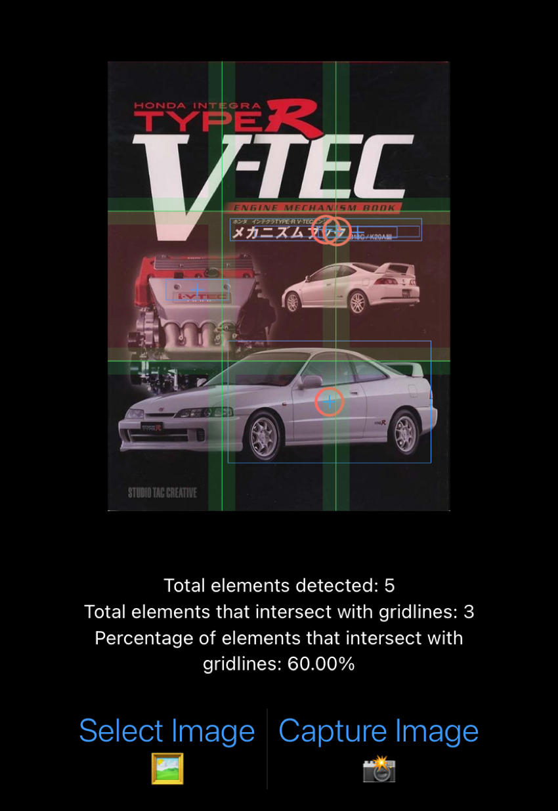
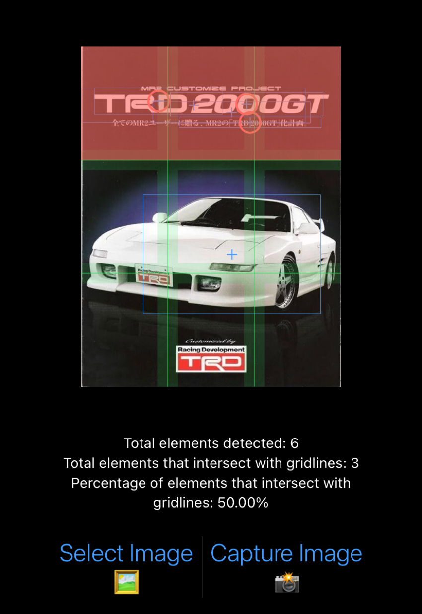
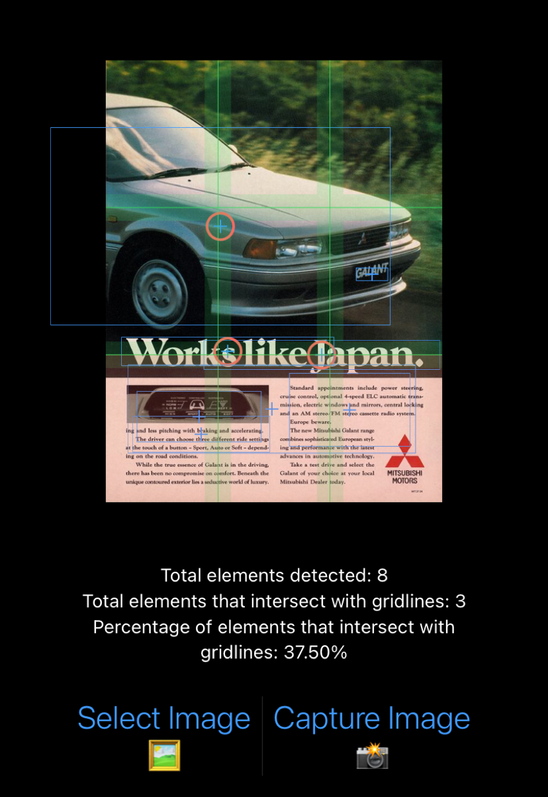
The system I developed for my final machine learning project used the Rule of Thirds design principles to analyse the effectiveness of car posters. The rule of thirds aligns elements within columns or along intersecting points. My system was trained on car posters and was able to identify cars and text elements, draw their bounding boxes, identify their central anchor point and analyse their relationships to the 3x3 grid. My system gave a "design efficiency" score based on alignment of elements. The project explored only one design principle and did not question the history or bias behind it, making it a good proof of concept project and opening the door to a more complex investigation.
Oscar Wilde famously said "talent borrows, genius steals:" In the case of machine learning and training datasets is this still the case? The internet has encouraged users to distribute media and AI systems have the capability to be trained on these images even if this was not the intended use. Is it therefore arguably unethical to use these resources for their unintended purpose or is it the graphic designers job to rid the world of ugliness by whatever means possible.
I have found in my personal practice that artificial intelligence has specific uses that speed up my process but has its shortfalls. For example, compositionally AI models struggle to distinguish or place elements in a multi-component image. Whilst individual image generations are becoming indistinguishable from pictures, more conventional graphic design work is yet to be threatened. As conscious graphic designers, the power to create ethical and effective automated design systems is within our grasp.
Graphic design is a subjective field however, meaning generating 'good' design will vary in practice. Graphic design trends are also contextual and historical and so a deep dive into the timelessness of design principles will be necessary. Technological advancements also inform design principles, for example in recent times the mass redesign of logos has occurred for the sake of scalability being that a large proportion of content is now viewed on a phone screen.
I created a proof of concept program to begin thinking through making: How I could realise the combination of design principles and programming. The concept did not function effectively however it did allow me to theorise how my idea could materialise. Canvas dimensions, columns and rows, images (and the number of them), text (and the amount of it) and positioning of the elements were all considerations when thinking about a system that obeys, and has the option to disobey, design principles. The proof of concept used p5.js to generate shapes which could be used in future iterations of my outcome.
Examining foundational design principles such as balance, contrast, and unity, illustrating their role in crafting aesthetically pleasing and effective visual communications. Exploring the potential for programming these principles to automate and optimize the design process.
Design principles are foundational concepts used to guide the creation of visual compositions, ensuring that the end result is aesthetically pleasing and effectively communicates its intended message. These principles play a crucial role in graphic design, where the arrangement, appearance, and overall harmony of elements can significantly impact viewer perception and interaction. It is vital to visit some examples of design principles to inform my knowledge of what design principles are, how they are used and their potential for automation. The seven most well known examples of design principles are balance, contrast, emphasis, repetition, unity, proportion and hierarchy.
Balance refers to the distribution of visual weight across a layout. It ensures that the composition feels stable and aesthetically complete. Balance can be achieved symmetrically, where elements are mirrored horizontally, vertically, or diagonally which creates an orderly appearance often utilised in corporate branding and minimalist designs. Alternatively, asymmetrical balance distributes elements unevenly, leading to dynamism and visual interest designs. In practice grids are often used to structure elements symmetrically or skew them in the case of asymmetrical designs.
Contrast involves the juxtaposition of opposing elements to distinguish parts of a design. This principle utilises differences in colours, shapes, or textures to create focal points and direct the viewer’s attention. For example, contrasting colours can highlight important information or create a visually striking effect. Contrast is often applied to text and image, using colour differences, to enhance readability and visual interest.
Emphasis focuses on drawing the viewer's attention to a specific area or element within the design. It is typically achieved through the use of contrast, placement, or scale. By emphasising particular parts of the design, such as with a large image or bold typography, designers can guide the viewer's eye to key information or features. This principle is essential for designing effective user interfaces and promotional materials where prioritising information is crucial.
Repetition strengthens visual cohesion by repeating the same elements across various parts of the design. This creates rhythm and cohesion, reinforcing the overall theme. Using the same elements, not necessarily with the same design styles, unifies and enhances designs, making it more coherent.
Unity is achieved when all components of a design work together seamlessly to form a cohesive whole. This principle is about ensuring that elements such as colour, style, and spacing are harmoniously integrated. For instance, matching the style and colour of buttons with other interface elements can enhance the visual unity of a project. Consistent use of margins and alignments also contributes to a unified appearance that is visually pleasing and easy to follow.
Proportion refers to the relative size and scale of elements within a design, influencing how they relate to each other and the overall composition. Proportion can establish a visual hierarchy, directing the viewer’s attention from larger, more dominant features to smaller, supporting details. This principle is particularly important in layout design, where varying the size of images and text can indicate their importance or function within the piece.
Hierarchy organises elements according to their level of importance. By making certain components more visually dominant, such as through size, colour or placement, designers can control the order in which information is perceived and processed. This structuring is crucial for effective communication, particularly in informational designs where guiding the viewer through the content in a logical sequence is key.
Design principles are essential tools for creating effective and engaging visual communications. By understanding and applying these concepts, designers can enhance both the aesthetic quality and functional clarity of their projects, making them more compelling and accessible to viewers. Whilst the application of these principles are understandable, computational systems may struggle in selectively applying them. Some designs will be more effective only utilising some principles whereas other designs, aiming for a more ordered and systematic aesthetic, will incorporate more principles.
Investigating the role of design principles in SafeHaven's work, characterized by a style of ‘ordered chaos.’ Despite varied use of fonts and seemingly sporadic alignments, SafeHaven’s visually appealing work is celebrated, questioning whether successful design must strictly follow established formulas.
Visual research benefited my understanding of design principles: by analysing graphic examples I became aware of principles that the designers were using.
I chose first to analyse an artist named SafeHaven who has been one of the main influences in my personal practice. I have previously aspired to create similar work and have always viewed it as ordered chaos, sometimes without the order. I found one of the most captivating things about his work to be that there was seemingly no one formula.If good design can be quantified I have always struggled to find the common ground.
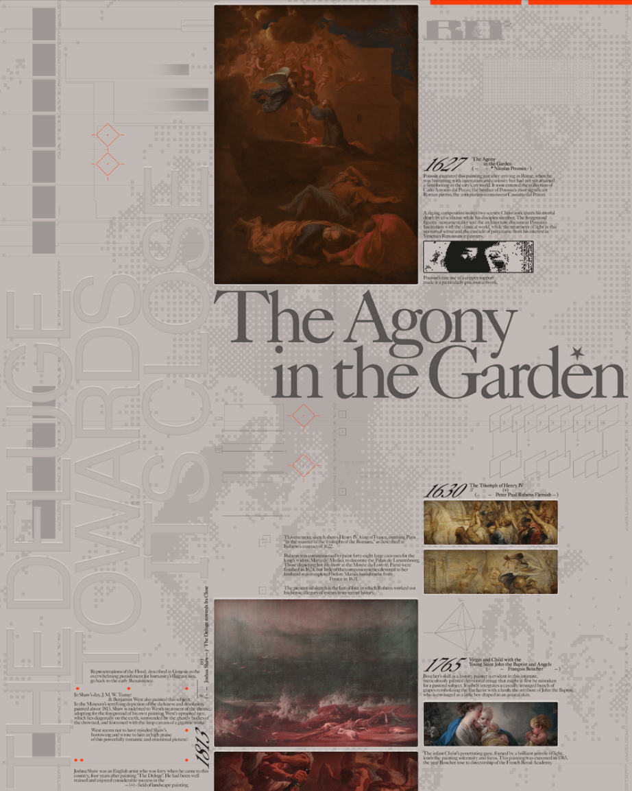
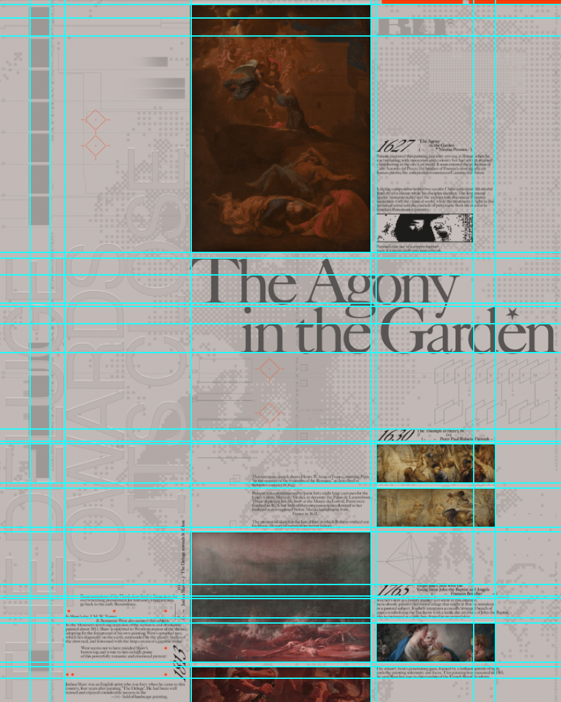
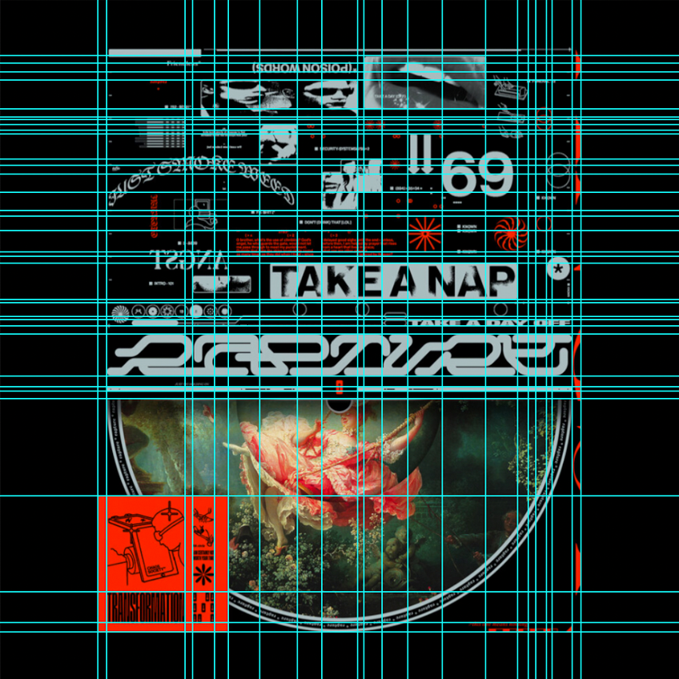
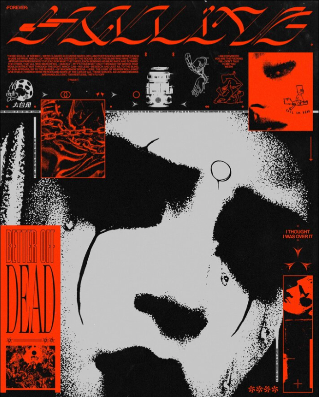
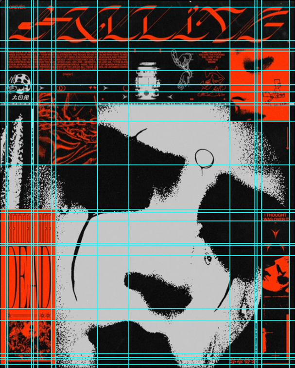
One of the most foundational principles for maintaining order is the use of a grid system. I wondered if visualising grid lines would expose SafeHaven's design secret. Whilst some of the elements align, I remain of the belief that his work is based on intuition. It is clear a sense of order is created through unity, which is particularly apparent in the third example where the colour palette is extremely limited.
Despite this, the chaos continues with the number of fonts that SafeHaven uses in his designs: acting against the principle of unity. In the second example, there seems to have been no attempt to follow any principles, yet I still view it as successful, visually pleasing design work.
Having collaborated with some of the biggest brands and music artists, Nike included, it is clear that SafeHaven’s work is well respected despite the unclear, if not non-existent, use of conventional design principles. Does good design have to be formulaic?
Evaluating the structured application of design principles in Doron's work, an artist who leverages his conventional arts education and technical mastery to enhance design workflows. The Rule of Thirds, balance, hierarchy and contrast feature prominently, making principles easily dissectible, enhancing visual coherence.
Another artist I take inspiration from is Doron who provides design critiques and tutorials, demonstrating how design principles can be applied to improve designs. Doron's technical understanding of his tools inspired thoughts of how technology affects workflows.
Doron attended a conventional arts high school and considers his approach to design to be more conventional being that he learnt design principles from an early age. The design principles in his graphics are much more obvious and dissectable:
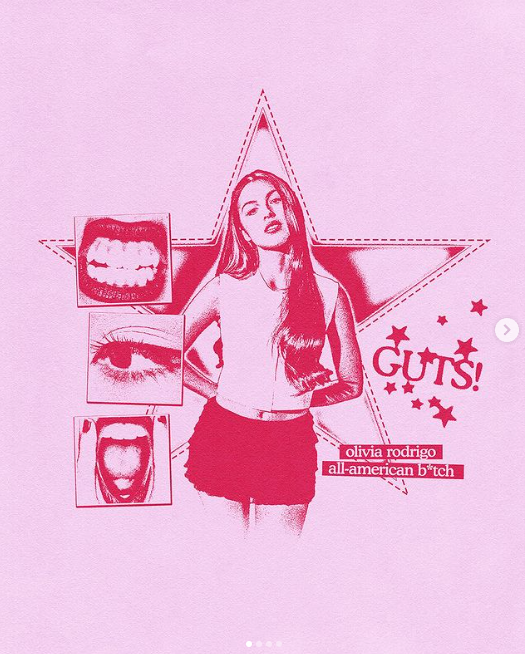
Emphasis to draw the eye to Olivia Rodrigo and the Rule of thirds occurs with the elements on the left. Balance is achieved through the use of the text, making the design symmetrical. Hierarchy highlighting the album name and the colour palette unites. Contrast is achieved through the separation of colours
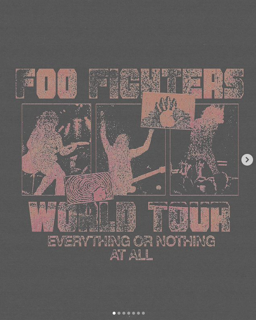
the Rule of thirds occurs in both the horizontal layout of the text and images and in the vertical spacing between the images. Hierarchy guides the viewer's eye down the page and a limited colour palette unites & contrasts.
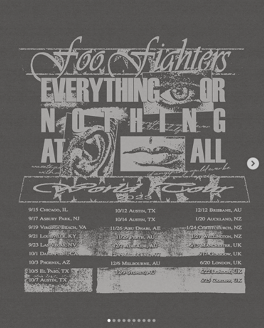
The Rule of thirds is present in the location text arrangement horizontally and in the separation of text vertically. Repetition occurs in the type of macro, facial images. The grunge texturing unites and makes the design elements coherent.
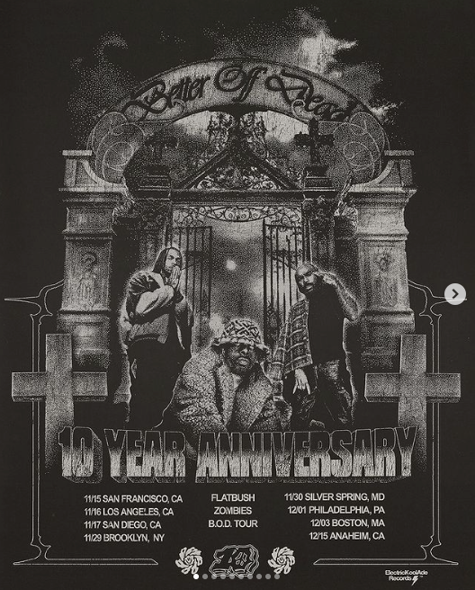
Balance occurs through the use of symmetry and the design and the Rule of Thirds with the alignment of “10 year anniversary” and vertical alignment of the columns and three subjects.
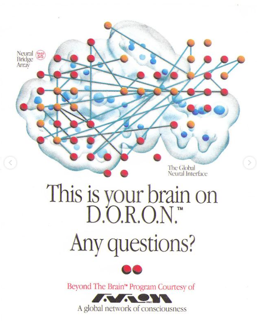
Balance is achieved through the symmetrical, centrally aligned text. Contrast and repetition is achieved through the red and orange spheres.
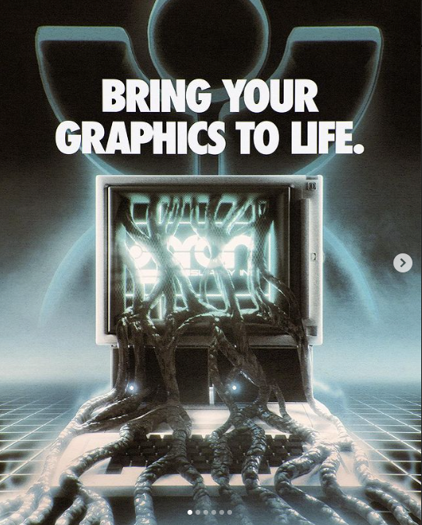
The Rule of Thirds and hierarchy are apparent in the vertical separation of the text.
Exploring the integration of design principles in digital compositions, the project involves creating a poster using a baseline grid and highly legible typeface to examine the functionality of traditional design frameworks. The research investigates whether strict adherence to design principles such as grids and type consistency enhances or constrains creativity.
The first MakingA task prompted thoughts of visually communicating my project concept. I visualised popular design frameworks such as the baseline grid and a highly legible typeface to mimic the International Style. An attempt was made to follow design principles to create a modernist design poster whilst visualising the structure behind the design choices.

My caption gave a brief rundown of the goals of the project:
"Off Grid will investigate the role of design principles, such as grids, type consistency, the golden ratio, and the rule of thirds, in creating "successful" designs. It will critically question well-established rules, questioning if they are truly essential or if they impose unnecessary constraints on creativity. The enquiry will dissect elements that contribute to effective graphic design and challenge the assumption that rigid adherence to principles guarantees better outcomes.
A programmed compositor will produce graphics that either follow or ignore these rules. Through this process, comparisons will be drawn between the resulting designs with their effectiveness evaluated. The goal is to determine if there is a clear distinction in the perceived success of designs that adhere to traditional principles versus those that break away from them.
The hypothesis driving this research is that the difference between rule-based and non-rule-based designs may be less significant than traditionally assumed. By the end of the project, I aim to reveal whether these principles enhance or hinder the creative process and to what extent they influence the success of a visual composition."
I am pleased with the poster, I think it communicated the design principles that are overlooked in design, using the grid systems and theoretical eye-tracking heatmaps to convey some of the principles I aim to explore later in the project. The main issue of the poster is the small text size of the project description, I aimed to maintain a minimalist look and therefore downsized the text. In hindsight I should have consolidated the text and increased the text size as a design with unreadable text is a fundamental failure.
The MakingA task allowed me to consider the parameters for my project further and gain clarity on my direction. By exploring graphic design principles I aim to uncover the feasibility of programmatically generated effective design. The project looks forward to the potential role of artificial intelligence within graphic design and the ethical considerations that come with non-human creatives.
I hope to create a sophisticated system that automatically implements design principles and one that does not: allowing the user to choose between theoretically 'good' design and unconventional design. The project should construct a deep understanding of new technologies to prepare for a world with automated graphic design systems.
The second MakingA task involved creating a short that explained a part of the project. I chose to explain some design principles, what they are and how they change a design visually. I enjoyed working with moving images and found myself returning to techniques used in my MakingA poster task. By explaining design principles generally I gained a deeper understanding of how to use them myself however choosing what information to convey allowed me to dissect the principles further, boiling them down to their most important features. The better I understand design principles the more accurately I can apply and critique them.
I found the editing process interesting. I used Adobe Illustrator to create the graphics, delved into audio editing for the first time using Adobe Audition, and used Premiere Pro to doctor parts of the recording. I used After Effects primarily to animate and composite the video. I thought the VHS effect was appropriate given the association design principles have with historic design philosophies.
My intention to identify 'good' design is to collect the opinions of people. Successful design must have an audience and considering their opinion is key to building a tool that is accessible to all. I decided the best way to consider a variety of opinions on such short notice was through a google form. I intentionally worded the questions so as not to lead the viewer down any specific paths or bias the answers in any way. It was my full intention to obtain fresh perspectives on my project that could inform my direction.
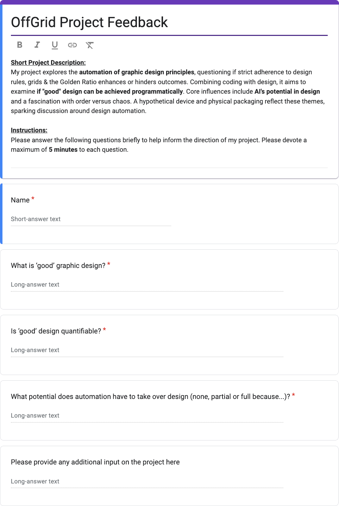
I received four responses, opting to use the form as a trial for future input gathering. The responses I got varied hugely and I believe the instinctual reactions caused by time limitations assisted in this diverse, personal view of design and the future of the industry. The results uncovered different preferences when it comes to design and design guidelines.
In the future I would like to build on these questions to inform how my outcomes can be inclusive and avoid elitist processes that have been apparent in the industry previously.
“A swatch is an object which contains samples of a material – these could be inks, types of wood, paper stocks or even digital colours.” Being that my project is almost entirely digital it is not relevant to create a physical swatch: Instead, implementing a reference to physicality would be more directly relatable. For this reason I have decided to explore texture in digital designs, more specifically how applying effects across a composition can create unity in a design through the consistent styling of elements.

My first thoughts are to use halftones and distressing effects to bring a design together. This is a process I am familiar with in my commission work and have begun considering how automation can make my process more efficient.
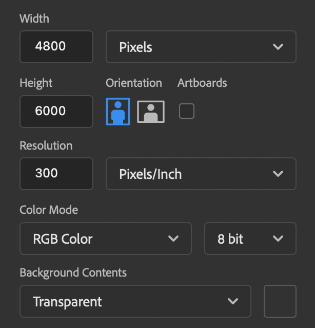
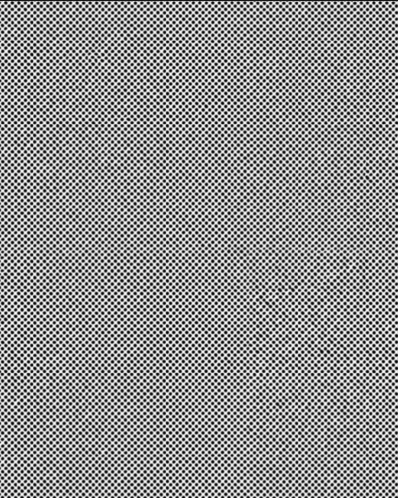
I begin with a standard aspect ratio, resolution and dpi and import textures. Halftone dots specifically allow colours to be separated, most commonly to prepare for print, without losing visual quality dramatically. Halftone dots are one method of diffusing colours, I often use other patterns to create different visual styles whilst maintaining the aforementioned design principles.
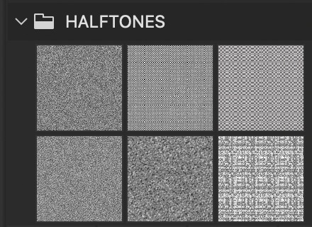


Here is a before and after image of how halftones look when applied using the overlay blending mode. By using the indexed colour function in Photoshop after this, colours can be separated.
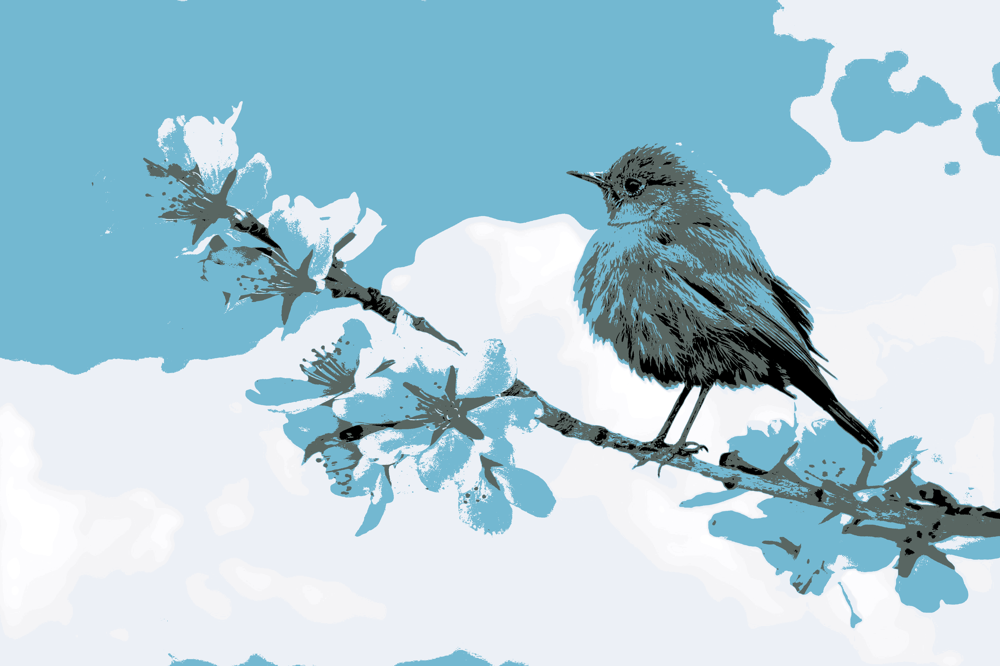
The first image uses the indexed colour function without any halftones: the transitions between the colours is harsh and unrealistic. The second image uses halftones which eases the transition between the colours: making things look more realistic. In a medium like screen printing the colour palette is limited and so it is vital the design consists only of defined solid colours.
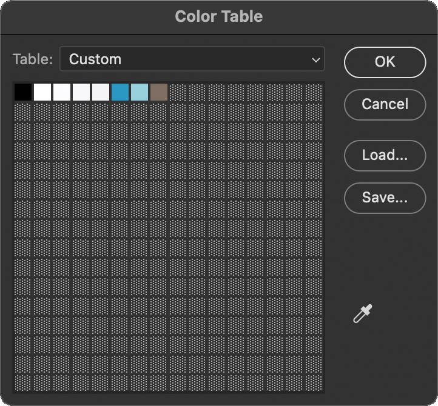
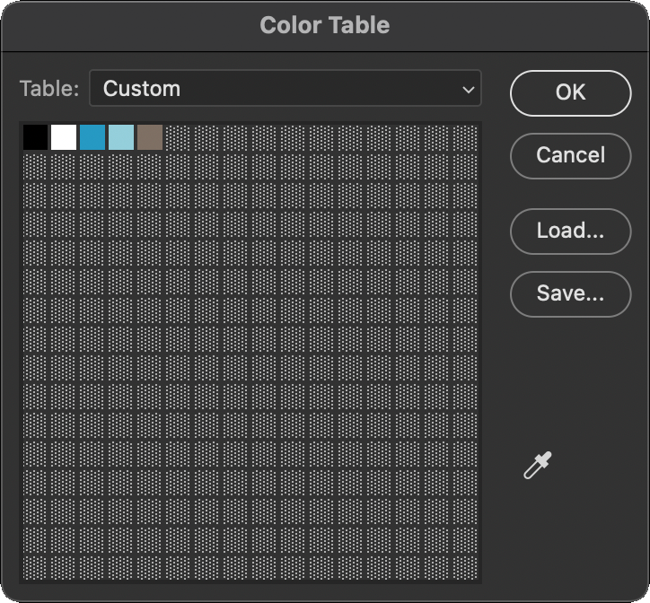
Often the automatically generated colour palette needs to be tweaked or simplified to ensure complete efficiency.

The scale of the halftone dots can be used to adjust the intensity of the effect.
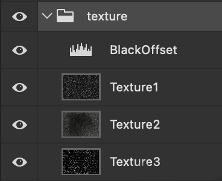
To further complexity the design and reinforce a vintage feel I add texture to the graphic which mimics the worn plastisol effect that naturally occurs on old screen printed graphics. On primarily white designs I use the Screen blending mode and on black designs I use the Multiply blending mode. I also use a levels adjustment layer to offset the black values: the textures lighten the overall composition so the adjustment reverts the contrast to mimic the original colour scheme more closely.
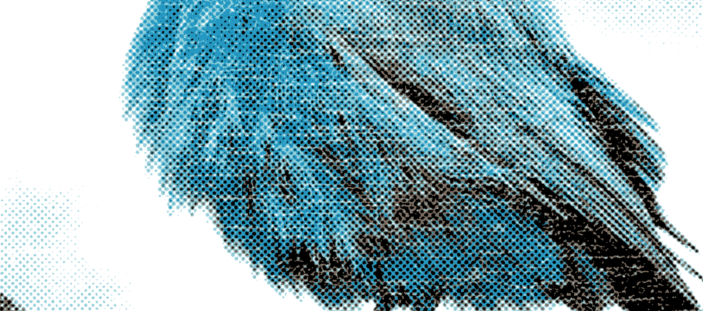
One of the ways that I have streamlined my creative process is through the use of actions within Photoshop. Actions can be created that repeat pre-recorded directions, saving time and moving towards a more automated, efficient way of working. This process still demands a lot of oversight: without human input the action does not know which blending modes to apply or the extent in which the effects are necessary. It is a hybrid way of working, one that depends equally on the machine as it does on the human.

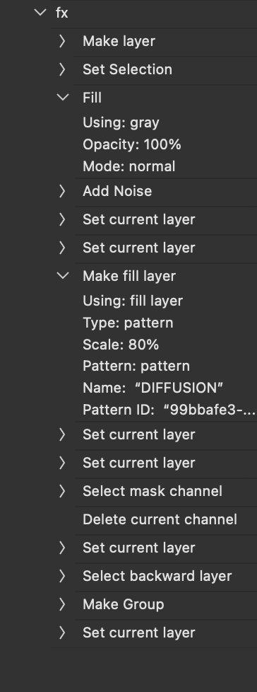
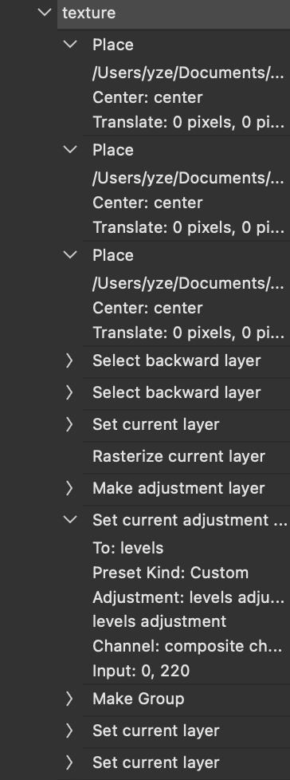
The automated action is applicable to any image, the value of the action however is dependent on context. Excluding artificial intelligence it is impossible for a machine to effectively apply design principles on its own, humans have always been required to step in and control actions.

Developing packaging for a conceptual device inspired by early 2000s technology, emphasising retro aesthetics. Echoing old gaming consoles the project critiques traditional design principles through a deliberately aged and ‘failed product’ aesthetic, using gridded and distressed elements to communicate the themes effectively yet ironically.
Continuing to build the visual identity of my project the task of creating packaging for my project arose. It was vital that the packaging represented the themes of my project both visually and in the form of the product itself. Being that my project would conclude with a program, I thought it best to create a device to use the program on.
The main theme of my project is its technological nature: I thought the best demonstration of technology, regarding handheld devices, are old video game consoles like the GameBoy, PSP & NintendoDS. I compiled a mood board composed of similar real and concept devices that I could base my product on.
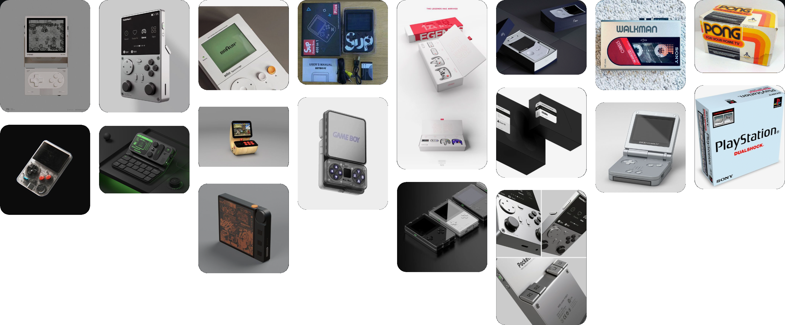
Modern technology-based product design seems to be getting more and more minimal, with buttons being stripped back for the sake of versatility: opting for on-screen buttons instead. Functionally, this makes sense; however, the loss of tactility impacts the satisfaction of using devices. Versatility wwas not a consideration: the more specialised the device is the better. I therefore decided on using buttons for each feature.
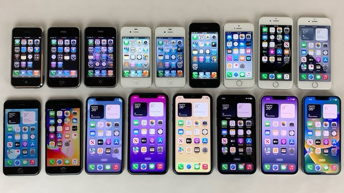
The device needed buttons to control page width & height, margins for the left, right, top & bottom, the number of rows & columns, the size of the baseline grid &/or the row & column gutters. For each of these buttons, there needs to be an increase and decrease value button. The device also needs a screen to display the output, and I decided on a folding mechanism to fit the design language of the early 2000s.
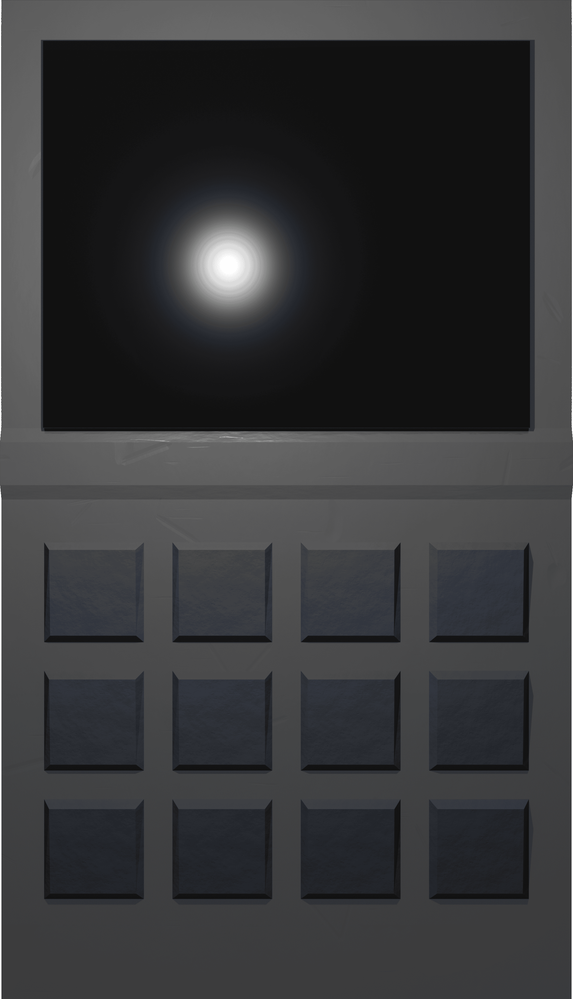
I modelled the device roughly, prioritising aesthetics over practicality since there was never any intention to manufacture or use the device. I followed this tutorial to texture the buttons and tweaked the values to my needs. I never intended for the device to feel modern; being that design principles are an age-old concept it was important to me that the visual language looked and felt like a relic found in the attic. I felt it was important for the device to have the aesthetic of a failed product. My interest for design principles stems not from an insistence that they are functional but rather an interest in the history and justification of them: Make no mistake, the project will analyse principles with a critical eye.
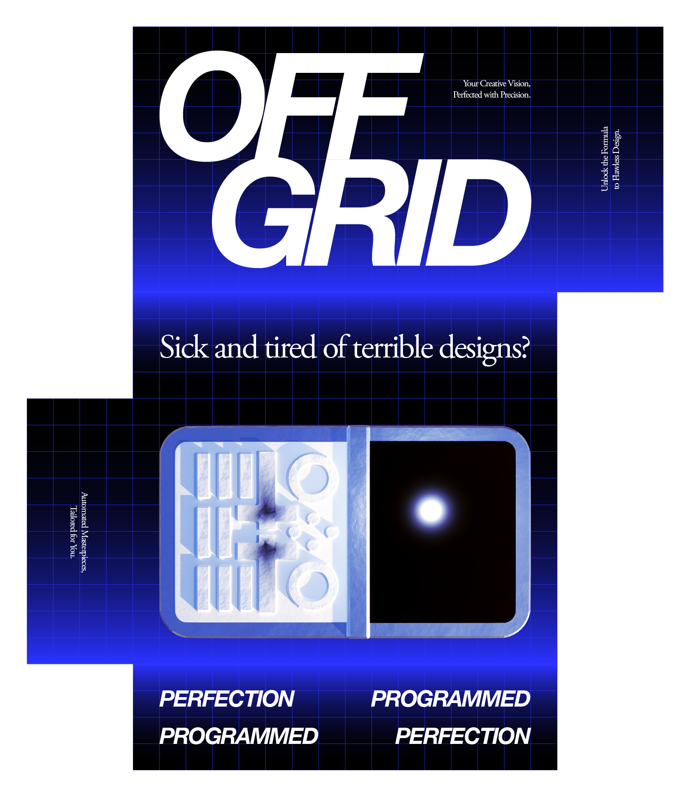
I then realised the packaging must be physical: Instead of attempting the impossible by manufacturing what I had modelled, I created packaging for the device I had designed. In keeping with the aesthetics and thought process of the device, I took inspiration from early 2000s device packaging, including some of the content used in my poster. I realised that a common visual recurrence was a gridded background, which worked perfectly with my project’s themes and used this grid to position elements on the packaging. Furthermore, I realised contextual packaging included gradients which I incorporated into my packaging to help the viewer build associations between my project and the era I aimed to reference.
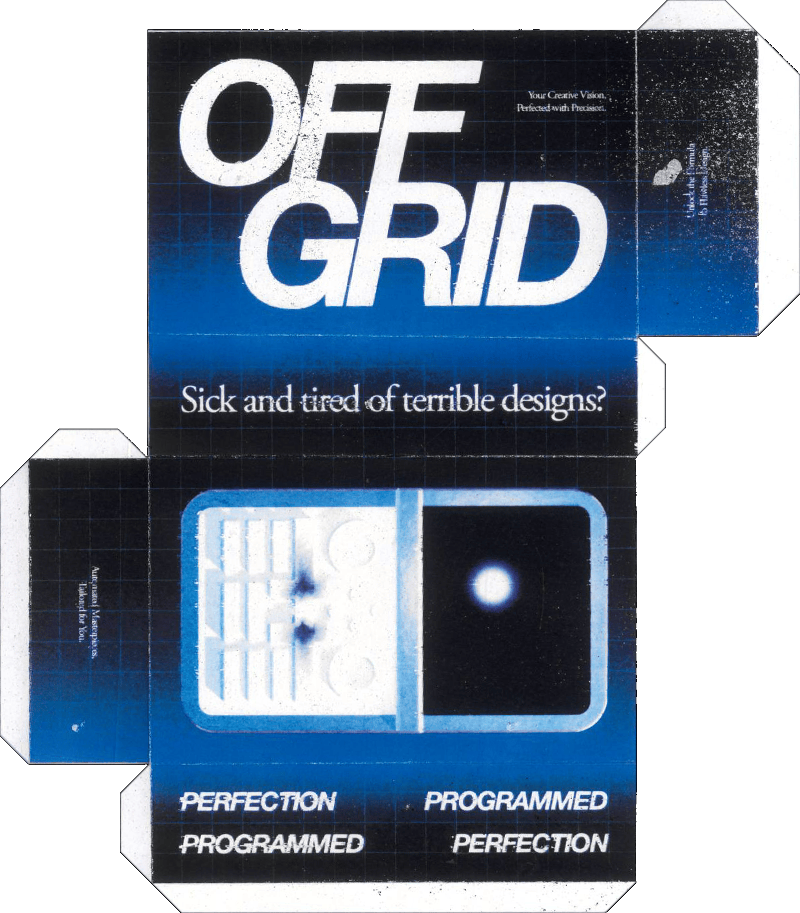
To further sell the narrative of a lost relic I chose to distress the packaging. The imperfections were effective in narrating my message subconsciously.
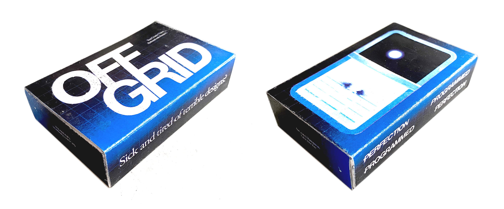
In assembling my net I made no attempt to keep things neat and tidy as the conscious design style was that of a messy one. In retrospect however the packaging alone does not communicate the meaning behind my project accurately. Feedback further reinforced this belief as there was confusion around the project itself and, after explanation, the project's view of design principles. The branding on the packaging aimed to over exaggerate the promises of design principles, highlighting the untrustworthy promises they make. Unfortunately this form of ironic design was lost on some people, showcasing the shortfalls of the packaging.
I believe the thought process behind the packaging was sound, however my making choices let me down. I have an overwhelming preference for digital workflows and avoid physical making at all costs. I understand that practical making is one of my weaker points. To accommodate for my predicted imperfections I decided to embrace them, choosing to make them part of my aesthetic and use them to my advantage. The outcome, however, was a scrappily made box that did not communicate the message of my project effectively. One of the few positives of creating the device physically was that I was able to envisage the device more realistically: the sense of scale that the packaging allowed gave me a deeper understanding of how a physical device could feel tactically.

I also decided to create a poster that would be visually similar to contextual designs to further sell the idea of the product. Further reflection and discussion inspired me to better represent the product the packagin 'contains.' This included bevelling the corners of the packaging, including more information on design principles and their application, replacing some of the slogans with informative text and exploring how a window could be used to uncover the interior of the packaging.
Addressing the flat and unappealing appearance of initial device models, texturing and distressing techniques were applied to enhance realism and aesthetic appeal. Through detailed experimentation with materials and light sources in Blender, the development aims to finalize the device’s design and integrate it seamlessly with digital presentations.
I’ve been struggling a lot with the outputs I have been creating: My reference images seem very simple in design, however when rendering the models they seem very flat and boring. They are understated like the references, however they are not visually appealing.
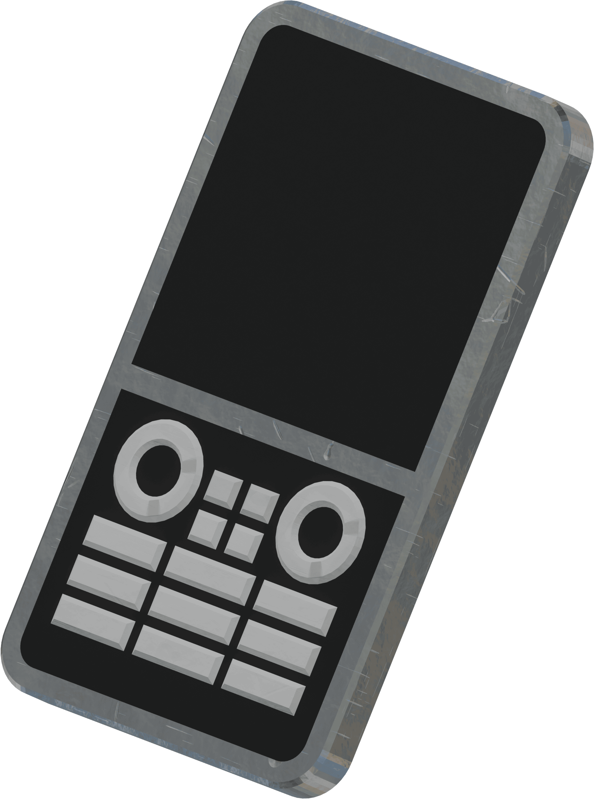
My solution to this problem was texturing. I decided that the reason the models looked so flat was due to their materials. I was encouraged by the metallic materials; however, the plastic and glass materials seemed miles off of what I wanted.
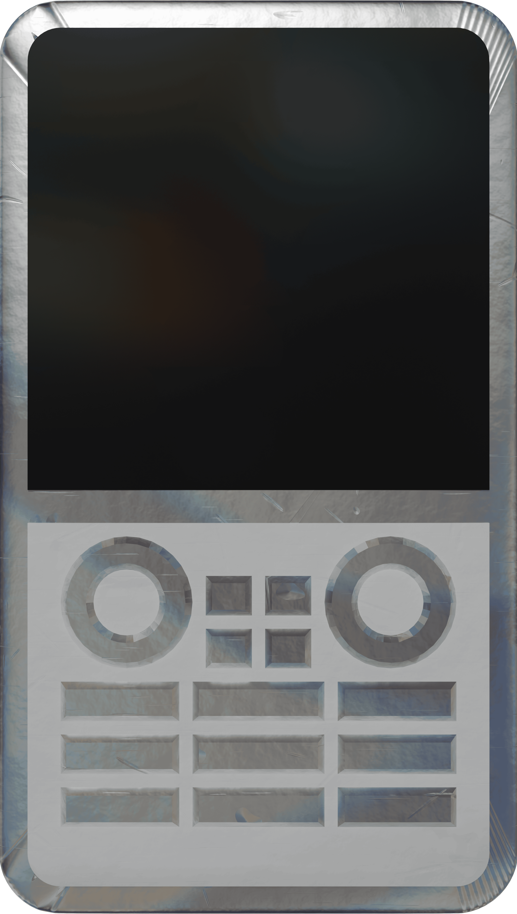
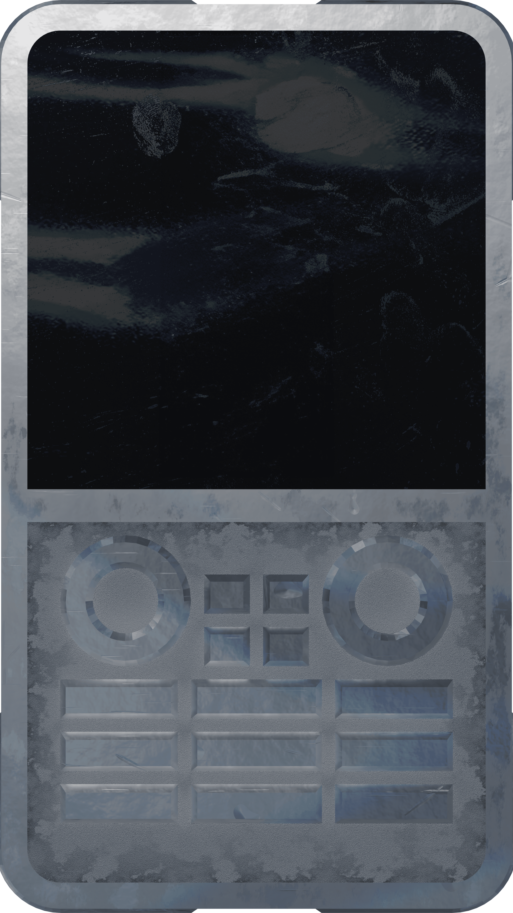
I experimented further with distressing the model, believing that the device would look more realistic and fit the appearance of my packaging if it was imperfect. This followed my previous reference to the idea that “digital imperfection is digital perfection.”
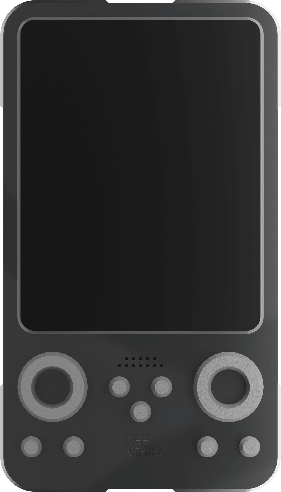
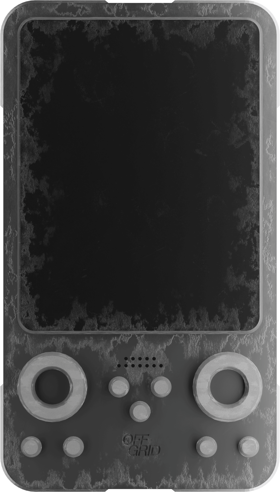
After following various tutorials, I began to understand how the texturing nodes work in Blender. I am far from an expert, but I feel that I am more competent with Blender now. I also added some further light sources and removed the world texture. I changed the model itself to add some complexity and visual appeal. I think that I am close to a finalised model.
The next steps I intend to take are finishing the packaging around the device and rendering visually appealing animations using the packaging. I understand that if I display any physical work, it will not represent my concept completely, meaning I will rely on digital work to clarify my messaging.
One of the ways I plan to do this is by displaying a video on the screen itself. I will create a CRT emulator that will push the graphics on screen towards a visual language that fits the device.
Reevaluating the project’s packaging to provoke thought and represent its conceptual questions more effectively. The packaging will feature pointed questions about design automation and perfection, alongside a detailed explanation to ensure it communicates the intersection of design control, consistency, and creativity with every use.
After re-reading the brief of the project, I have realised that my package needs to be more thought-provoking. My thought process until this point has been to represent my project in the truest way possible. I believed that the project idea itself was a provocative enough question; however, I have been representing the project’s final outcome rather than the question the outcome aims to unpack.
I will be re-writing the information on the package to represent these questions:
I will also need a paragraph explaining the device and project in more detail:
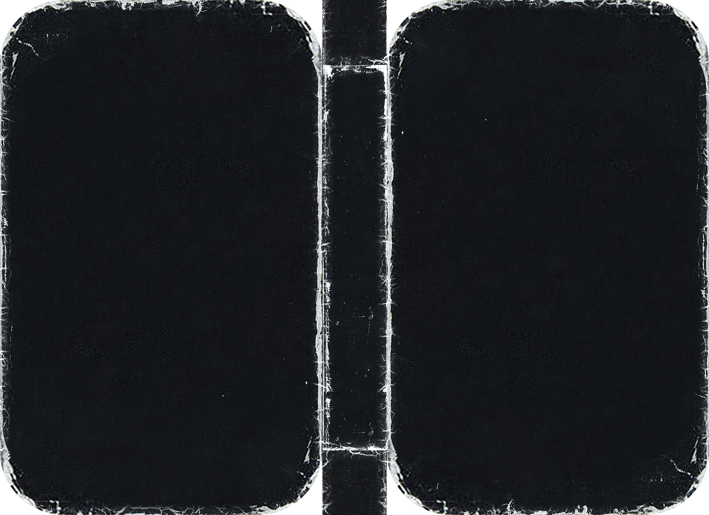
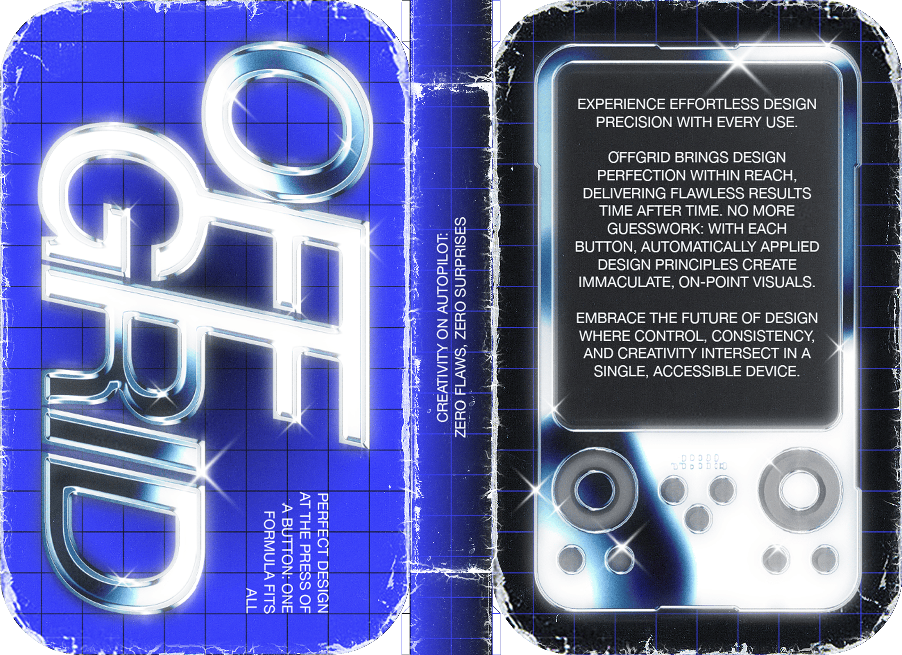
I applied some distressing effects to my graphics to give them a worn, authentic feel.
UV mapping is a technique used in 3D modelling to apply textures and graphics to a model. In this case I used it to apply my graphics to the different surfaces.
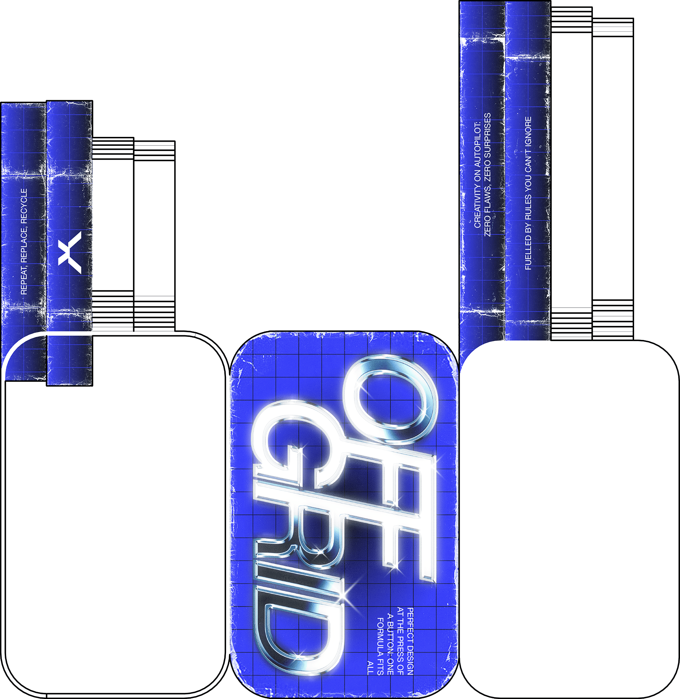
Integrating digital storytelling by focusing on the tactile satisfaction of opening packaging, simulating it through animations replicating the physical experience. Explanations of design principles by mimicking old boot screens, enhancing the narrative.
I understood that I could not fully realise my concept in the physical world and instead continued building my narrative digitally. One of the core mechanisms for my packaging was how it opened: I wanted to mimic modern day product design wherein the process of opening a device is highly satisfying, using surface friction to slowly slide the shell package away from the main packaging. I decided to make this a focal point of my animation to ensure this consideration was front and center.
To rectify the shortcomings from before I decided to create another video that explained design principles. This solution allowed me to keep the packaging similar to how it presently was whilst communicating more information. Stylistically I wanted the video to mimic a boot screen of old devices and so I included specific transition effects and a general visual style to communicate this.
In continuation with the direct technological link I edited the video in After Effects to apply certain glitch effects. Just as I wanted the packaging to look like a lost relic, I wanted the video to feel like an old, discovered VHS tape.
A problem with having the video and packaging separate is that they do not inform each other: They are both separate outcomes that are seemingly unlinked. I thought about how I could combine the outcomes into one. I remembered how consideration for the interior of the package was mentioned and thought about how I could spin my inability to manufacture the actual device. I thought back to old packaging for similar devices and how they typically came with some sort of manual: a small book that contained information on the device. I theorised about how I could use this to convey further information and realised I could create a flipbook animation of the render I had made in Blender. If the flipbook was the same dimensions as the device I could complete the interior of the packaging and put the flipbook in the place of where the device would be. The video had no reliance on sound, therefore no sacrifices would be made.
I re-animated my render so the front of the device could act as the cover for the flipbook, meaning the viewer would open the packaging to the front of the device as if it were there. I then mimicked some of the previous animations for the sake of visual interest.
I realised the previous video was not a good proof of concept as there were too many frames per second, unlike a flipbook. I re-exported at a lower framerate to give a better understanding of how the flipbook could appear.